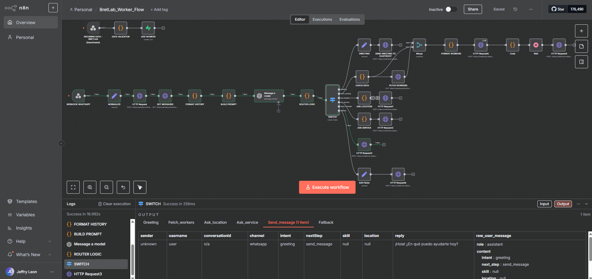
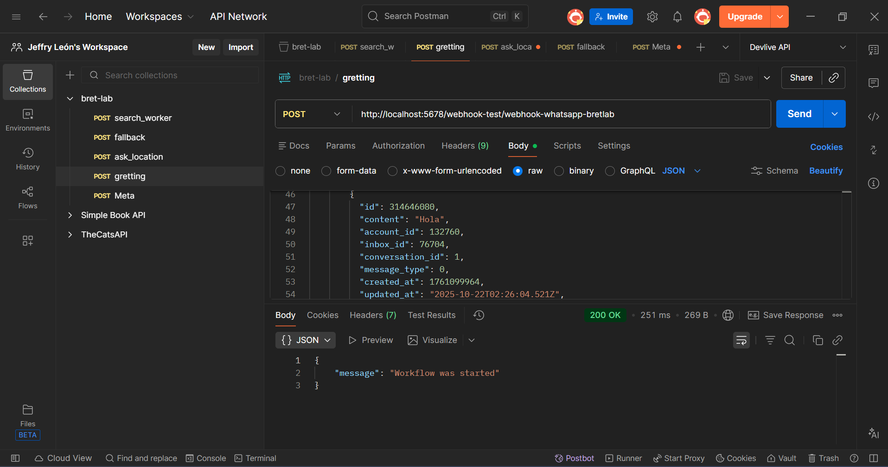
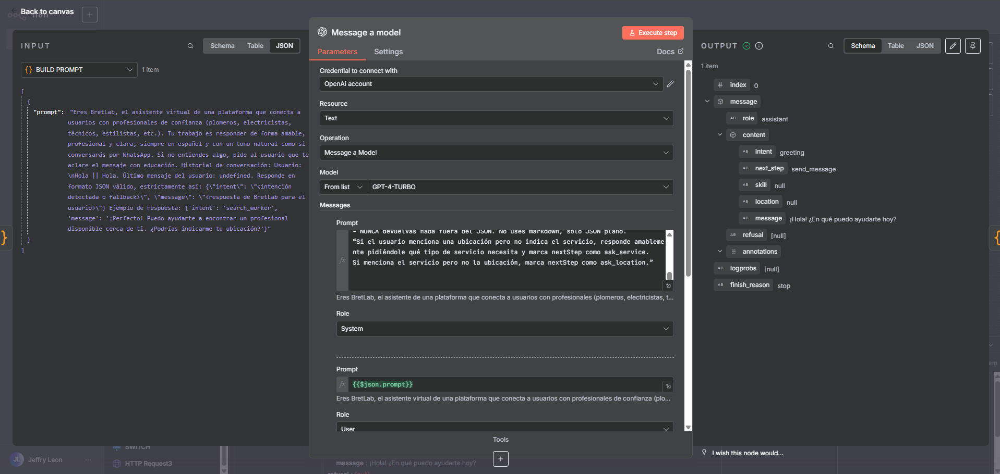
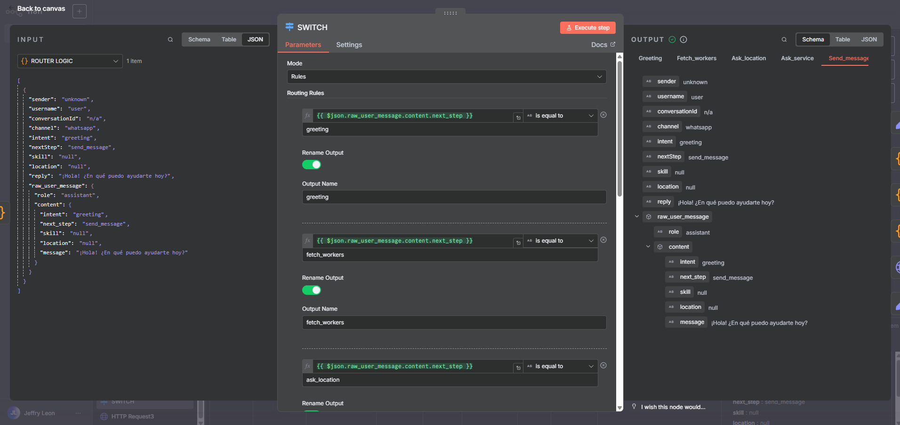
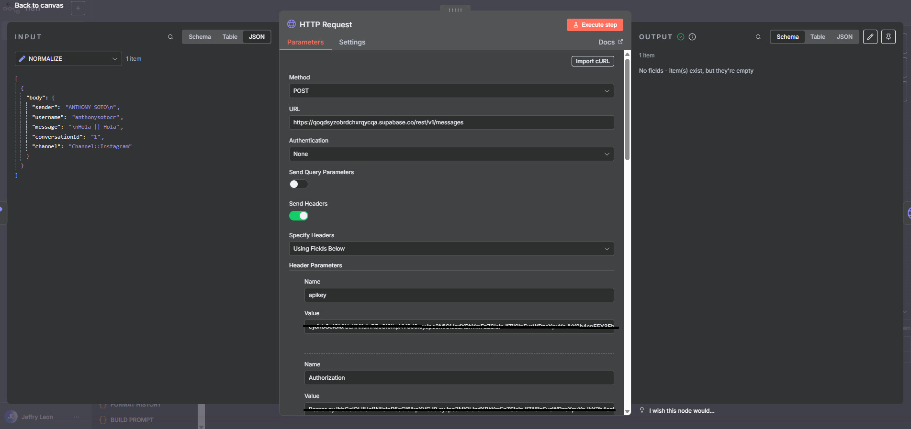
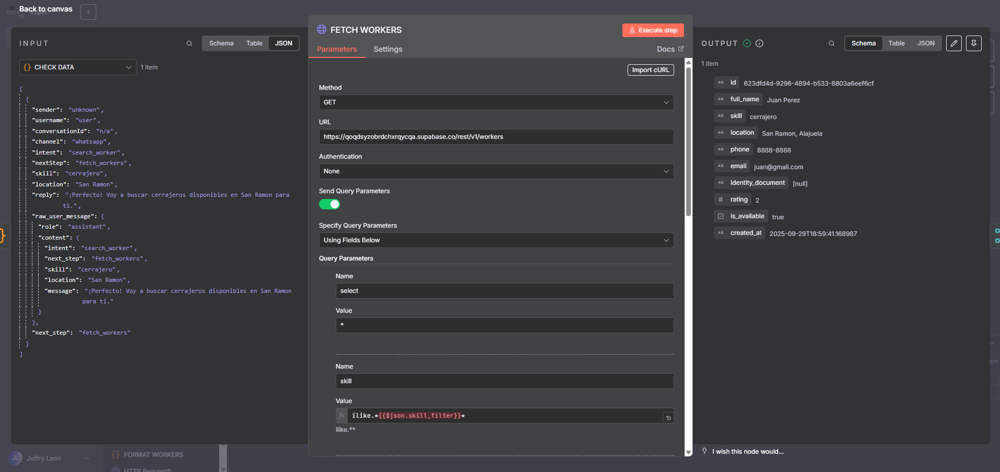
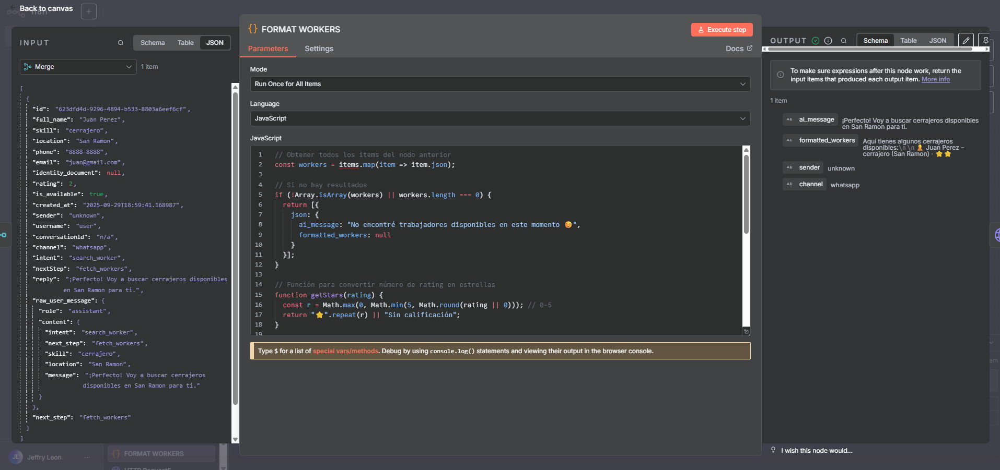
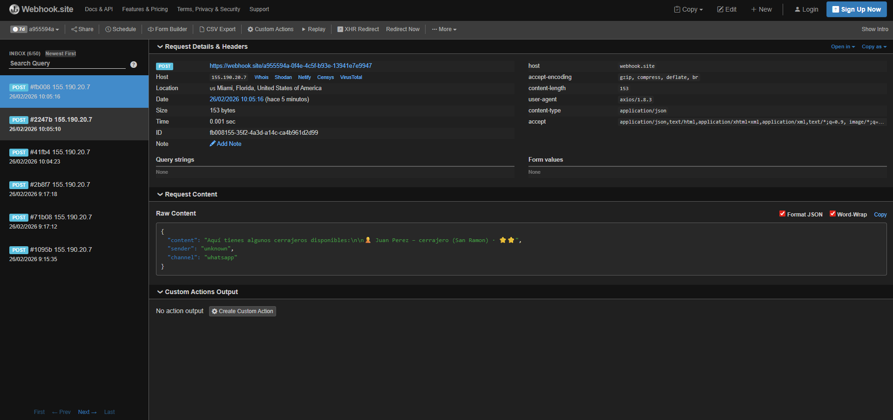

Portfolio · AI Workflow
BretLab AI Workflow Demo
Demo técnico de un flujo en n8n que procesa un mensaje entrante, guarda historial en Supabase, usa un LLM para detectar intención con salida JSON estructurada, enruta la conversación por ramas y devuelve una respuesta final (simulada) vía webhook.
What this demo demonstrates
- Webhook trigger (test) and message normalization
- Persisting conversation messages into Supabase
- LLM node returning strict JSON (intent + next_step + entities)
- Router (Switch) to branch the flow based on next_step
- Fetching workers dynamically from Supabase (filters)
- Formatting a human-friendly response from structured data
01 · Workflow overview

02 · Trigger (Postman)

03 · LLM node config

04 · Structured output (intent)

intent + next_step + entidades.05 · Router (Switch branches)

next_step.06 · Supabase insert (messages)

messages.07 · Supabase fetch (workers)

workers con filtros dinámicos (skill/location).08 · Format response

09 · Final response (webhook receiver)
